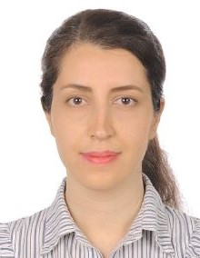

|  |
Samira MohammadiMaster of Computer Science StudentUniversity of Quebec Challenge Accepted |
Skills
- Machine Learning: Strong knowledge of machine learning algorithms, including deep learning (Computer Vision & Natural Language Processing) GitHub
- Data Analysis and Analytics: Proficient in data analysis and modeling using data envelopment analysis in the petrochemical industry. Link. Experienced in leveraging data analytics tools, including Power BI, for insightful decision-making. Certificate
- Database Management: MySQL Certificate, SQL
- Programming Languages: Proficient in Python, C#, SQL, HTML/CSS
- Data Visualization and Business Intelligence: Power BI
- Software Development: Familiarity with OOP, ORM, WPF, MVVM, and Rest API
- Analytical Skills: Proven ability in problem-solving and decision-making
Education
| Date | Education |
|---|---|
| 2022-Sep. 2023 | Study computer science at UQAR University of Quebec at Rimouski |
| Sep. 2013-Sep. 2015 | M.Sc.: Industrial Management (Subfield: Operation Research) at Department of Management, Tehran Science and Research Branch, (Fars) Islamic Azad University, Iran |
| Sep. 2007-Sep. 2011 | B.Sc.: Electrical Engineering (Subfield: Electronic) at Department of Electrical and Computer Engineering, Shiraz University, Shiraz, Iran |
Research Experiences
- Papers:
- National Conferences:
- S, Mohammadi; J, Gerami; Evaluation of efficiency by FDEA with undesirable outputs, 7th National Conference of DEA, Iran, Islamic Azad university, Kermanshah branch, 2015.
- S, Mohammadi; J Gerami; M, Mozaffari; Finding appropriate model by value efficiency with undesirable outputs. 2nd national conference of mathematics: advanced engineering with mathematical techniques, Iran, Islamic Azad university, Urmia branch, 2017.
- S. Mohammadi; J, Gerami; M, Mozaffari; The scale of efficiency with Fuzzy data. 2nd national conference of mathematics: advanced engineering with mathematical techniques, Iran, Islamic Azad university, Urmia branch, 2017.
Experience
-
Operations Manager at East Star Consultant
June 2019 - November 2021 (2 years 6 months)
As an Operations Manager, I oversaw daily operations, coordinated projects, and ensured efficient workflow. My role involved planning, resource management, and implementing process improvements to optimize performance and meet organizational goals.
-
Electrical Engineer at East Star Consultant
November 2015 - June 2019 (3 years 8 months)
During my tenure as an Electrical Engineer, I was responsible for designing, testing, and maintaining electrical systems. I collaborated with cross-functional teams to ensure project success, provided technical support, and contributed to the development of innovative solutions.
Location: Shiraz, Fars Province, Iran